Student 1549284
Annelot Wennekes
CSA Trainee
Afstudeerproject CMD | Content Design
CSA Trainee
Sales Engineer
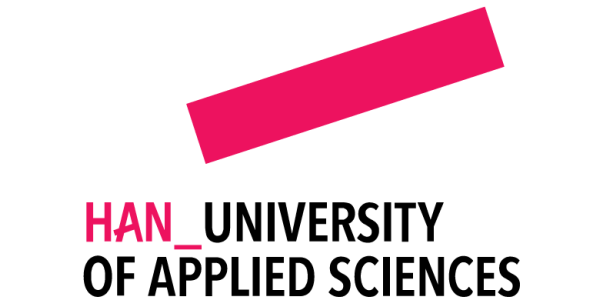
Ontwerper in de maatschappij
Ontwerper in Ontwikkeling
Learning & Development Manager
Category Manager
Internship Supervisor
Dit ontwerprapport beschrijft de ontwikkeling van een nieuw trainingsconcept dat medewerkers van NEDCON ondersteunt in het
zelfstandig en effectief werken met de Configuration Sales Application (CSA). Het doel van dit document is om je mee te nemen in de
ontwerpreis en de ontwerpkeuzes die hebben geleid tot het uiteindelijke concept.
We beginnen met een inleiding waarin we de context van het project schetsen, gevolgd door een overzicht van de criteria en functies
die het trainingsconcept moet vervullen. Vervolgens presenteren we het concept zelf, inclusief de verschillende onderdelen zoals de Hub,
eLearning modules en prototypes hiervan. Tot slot reflecteren we op het ontwerpproces en doen we aanbevelingen voor verdere ontwikkeling en implementatie.
NEDCON is een bedrijf dat gespecialiseerd is in het ontwerpen, produceren en monteren van stalen opslagsystemen. Denk hierbij aan industriele opbergrekken in warenhuizen en distributie centra. Maar dat is niet het enige dat ze verkopen. NEDCON verkoopt ook een service: de service van een magazijnontwerper die samen met de klant een magazijn ontwerpt dat precies aansluit bij de wensen van de klant. Deze service is essentieel voor NEDCON, omdat het ervoor zorgt dat klanten terugkomen en dat NEDCON zich onderscheidt van concurrenten. Elk magazijn heeft een eigen unieke wenslijst en NEDCON biedt voor elk uniek vraagstuk een passende magazijnoplossing (Wennekes, A.C.M.J., 2025, Projectplan CSA Trainingsmateriaal).
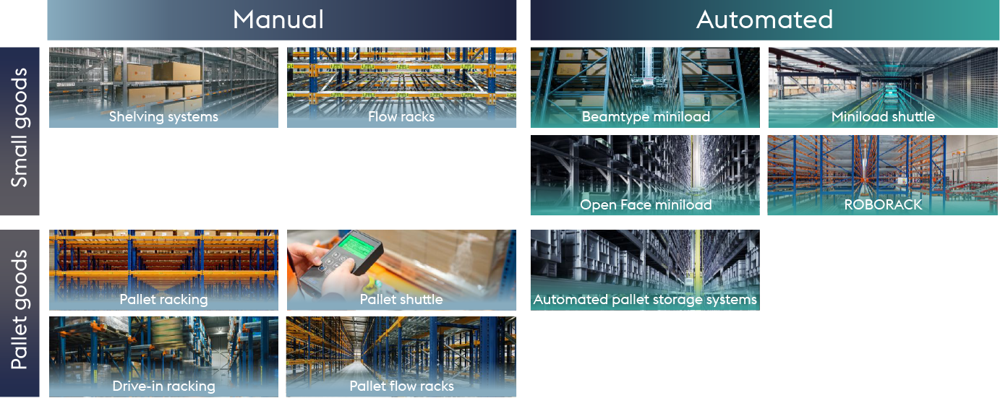
Naast de Shelving Racks en Pallet racking zijn er nog negen andere producten die NEDCON ontwerpt en verkoopt. De producten zijn te verdelen in vier kwadranten:
Manual of Automated en Small goods of Pallet goods. De opslagsystemen voor DHL vallen allebei onder Manual, omdat deze goederen manueel geplaatst en opgepakt worden,
soms met een heftruck of reachtruck.
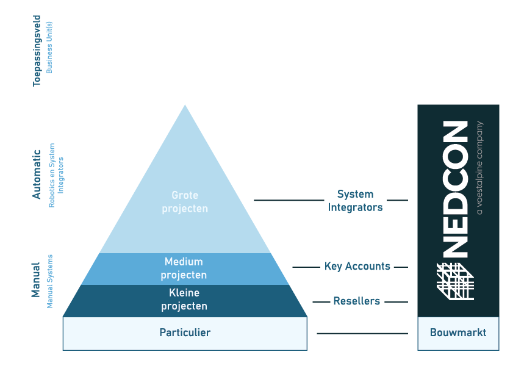
De markt wordt bediend via drie kanalen. Grote projecten gaan via System Integrators. Dit zijn partijen die geautomatiseerde magazijnsystemen ontwikkelen waarbij ze mechatronica,
software en opslagsystemen (van NEDCON) combineren om één geheel te verkopen.
Daarnaast heeft NEDCON directe klanten waar projecten aan verkocht worden, dit wordt gedaan via Key Accounts en Key Accountmanagers. DHL is hiervan een voorbeeld.
Resellers zijn lokale distributeurs die de NEDCON producten of onderdelen aan eindklanten verkoopt. Vaak verkopen zij ook andere producten zoals heftrucks.
Dit afstudeerproject richt zich op de BU Manual, in het specifiek een sales tool die ingezet wordt op de sales afdeling binnen de BU. In de verkoopfase van een project kan het programma Configuration Sales Application (CSA) worden ingezet om snel een 2D en 3D tekening te maken van een beoogde magazijnoplossing. Bij de intake van een klant kan er snel worden gevisualiseerd en geoffreerd worden wat een positieve bijdrage levert aan de besluitvorming van de klant. Ondanks de voordelen die CSA biedt is er weerstand binnen de BU Manual om CSA vaker in te zetten voor projecten.
Het primaire doel van het trainingsconcept is om de adoptiegraad van CSA onder medewerkers te vergroten en om de zelfredzaamheid in het gebruik te versterken. Oorspronkelijk bestond de doelgroep uit interne medewerkers en externe Resellers. Tijdens de onderzoeksfase is deze doelgroep aangescherpt, waarbij de focus nu op interne medewerkers is komen te liggen. Omdat er wel onderzoek is gedaan naar de Resellers en er enige overlap is tussen de behoeften van de medewerkers en Resellers wordt er wel een advies gedaan het concept voor Resellers toegankelijk te maken. De huidige licentieverdeling onder medewerkers van de BU Manual is in afbeelding 4 gevisualiseerd. Het vernieuwde trainingsconcept moet ervoor zorgen dat het aantal inactieve licentiehouders op zijn minst gehalveerd wordt.
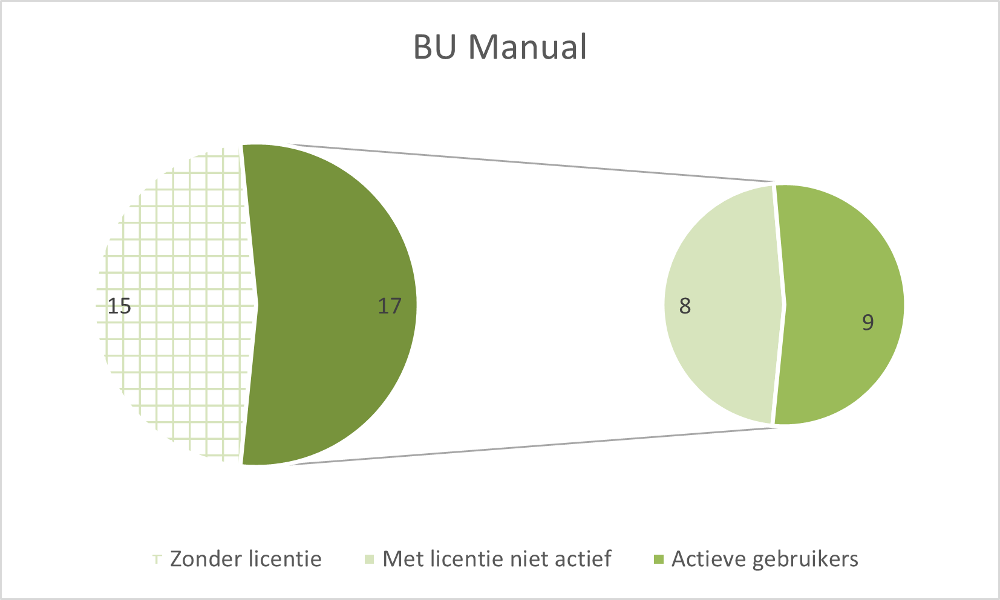
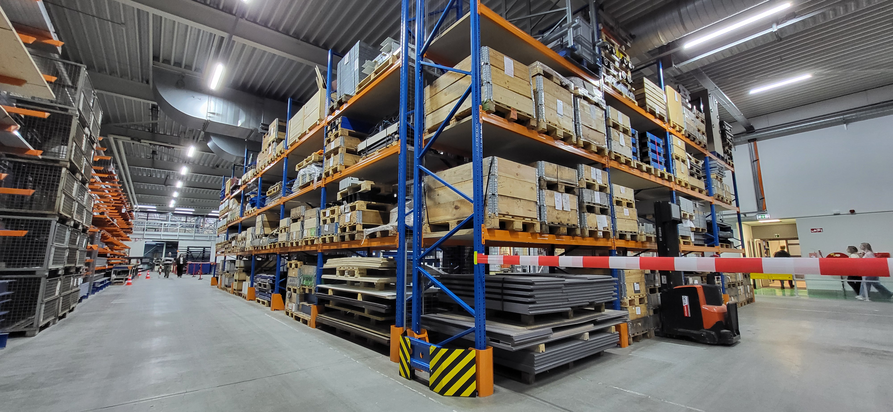


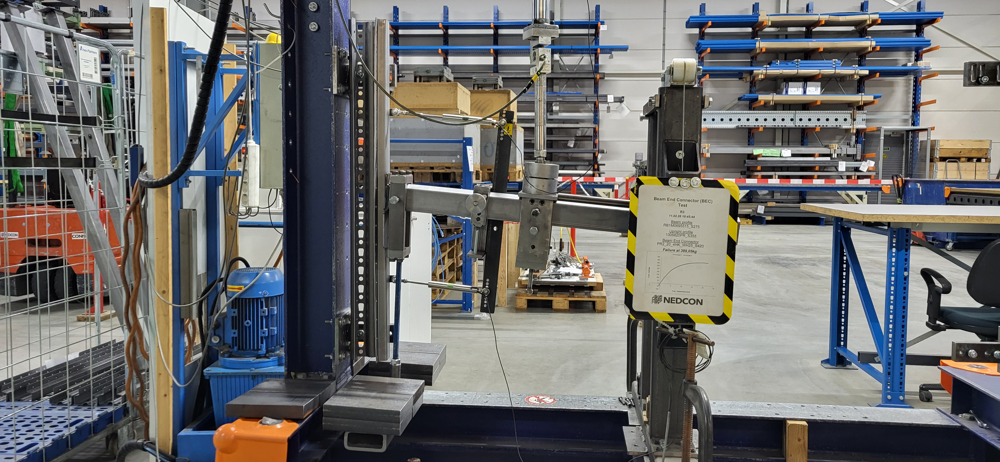
Het trainingsconcept moet verschillende functies hebben. Deze omschrijven hoe het concept het doel moet bereiken. De kernfuncties van het concept zijn informeren en instrueren, online interacties faciliteren ten behoeve van blended learning en zelfgestuurd leren ondersteunen.
Aan de hand van de functies kunnen we een aantal criteria opstellen. Deze geven richting aan het ontwerp. De criteria zijn toetsbaar en vormen de basis voor de keuze van de oplossingsrichting. Tevens borgen de criteria dat het ontwerp aansluit bij de User Need Statements van de doelgroep. Omdat een tijdslimiet aan het afstudeerproject zit, is de Moscow-methode ingezet om de lijst in vier categorieën te delen: Must-haves, Should-haves, Could-haves en Won't-haves. Dit zorgt ervoor dat er binnen de beschikbare tijd een Minimal Viable Product kan geleverd worden.
Om het interne gebruik van CSA te vergroten en gebruikers zich meer zeker te laten voelen na een training moet er een centraal en toegankelijk punt komen dat gebruikers hierin faciliteert. Ze moeten in staat zijn om zelfstandig functie uitleg te kunnen vinden, doelgericht te kunnen oefenen aan de hand van verschillende casussen om de kennis te borgen en de mogelijkheid hebben om met andere gebruikers online te interacteren. De gekozen oplossingsrichting wordt hieronder verder uitgelicht.
Het concept is een CSA Hub, een digitale omgeving naslagwerk op wordt gepubliceerd en bijgehouden. Deze Hub moet via verschillende navigatie stappen te bereiken zijn. Denk hierbij aan een call to action in een nieuwsbrief, een makkelijke URL en dedicated link op de voestalpine SharePoint homepagina.
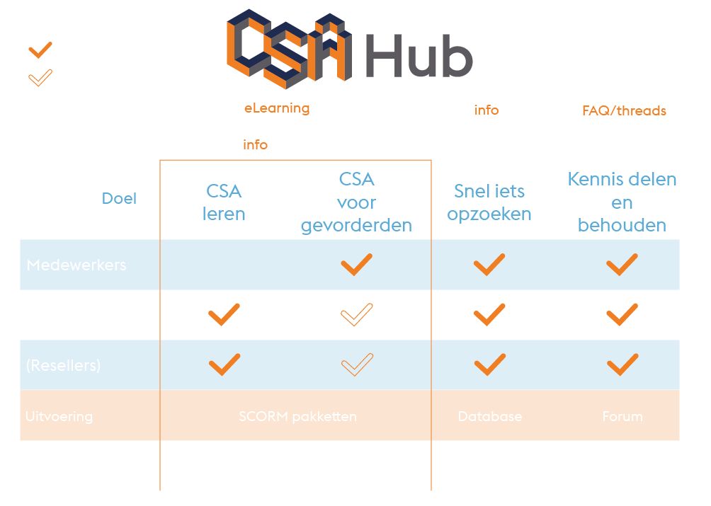
Het doel van de eLearning is kennisoverdracht, opgesplitst in twee niveaus: basic en advanced. Omdat voestalpine een aparte Learning Management System (LMS) heeft kan de Hub alleen maar een link naar deze omgeving bieden. Door het beleid van voestalpine is het niet mogelijk om zelf eLearning modules te hosten. Verschillende casussen zullen de rode lijn vormen van de modules. Dit koppelt opgedane ervaring aan de praktijk. Elke module bestaat uit drie lessen: Prepare, Design en Quote. Dit heeft te maken met de manier waarop er in de praktijk te werk wordt gegaan.
De Hub bevat naslagwerk zodat de gebruiker snel iets kan opzoeken. De navigatiestructuur van de Hub is daarom modulair ingericht, op basis van de verschillende functies van CSA. De headers van de artikelen moeten voorzien zijn van een taakgerichte omschrijving zodat de gebruiker snel kan beoordelen of die het juiste artikel voor zich heeft. Ook moet in de header het onderscheid gemaakt worden in het niveau van de functie, CSA Basic of CSA Advanced.
Om de online interactie te bevorderen en de gebruikers de mogelijkheid te geven om kennis en best practices te delen met elkaar moet er een discussie pagina worden ingericht. Problemen waar veel gebruikers tegen aan lopen kunnen in de FAQ (veelgestelde vragen) worden afgevangen.
Het huidige logo dat interne wordt gebruikt op dit moment is van CSA was Czech Airline, deze kan dus niet gebruikt worden voor externe communicatie. Het voorstel voor het nieuwe logo is een monogram van de letters in een isometrische 3D-stijl, wat aansluit bij het 3D-aspect van CSA. De kleuren zijn conf NEDCON huisstijl. Alle onderdelen van het logo volgen consistente hoeken, hierdoor ontstaat de illusie van diepte. Het logo krijgt volume door de consistentie in kleurgebruik. Elke letter bestaat uit verschillende vlakken met respectievelijke kleuren. De letters zijn niet uitgelijnd om de modulariteit van het concept te belichamen. Door de contrast van oranje 'voorkant' , donker blauw 'bovenkant' en de grijzs 'zijkant' wordt 3D effect nog eens vergroot. De kleur oranje trekt de aandacht en verhoogt de leesbaarheid van de lettervormen. De primaire kleuren oranje en blauw refereren ook naar de kleuren van de staanders en liggers die standaard blauw en oranje zijn. De combinatie van de isometrische vormen, de modulaire letters en de contrastrijke kleuren past bij CSA waarin configureren en visualiseren centraal staat. De kleurenbalans past tevens bij de merkassociaties betrouwbaar en functioneel.
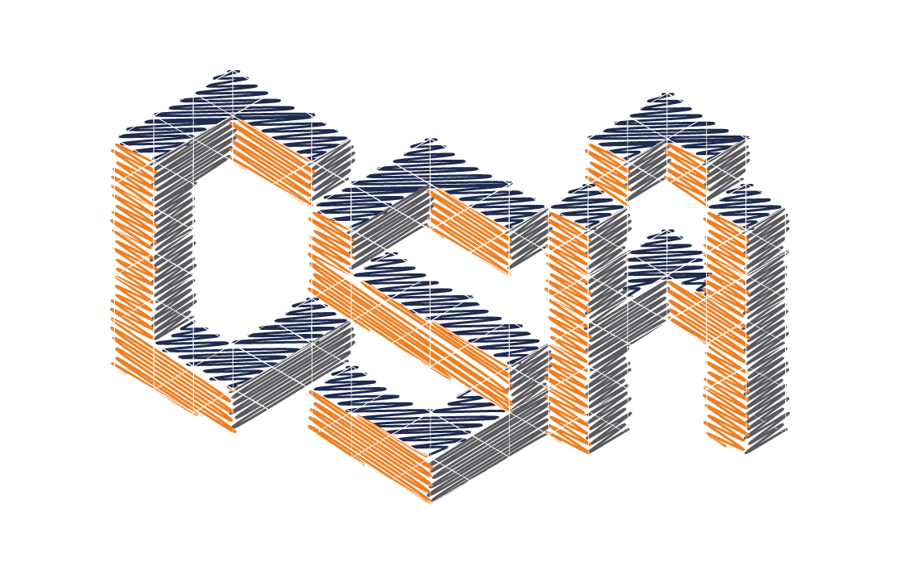
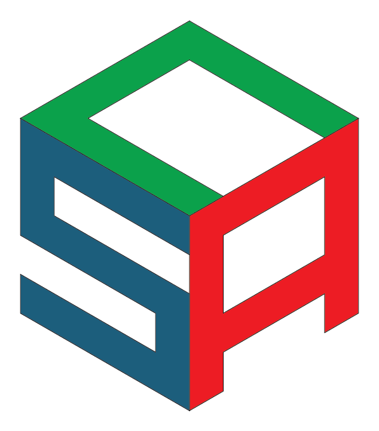
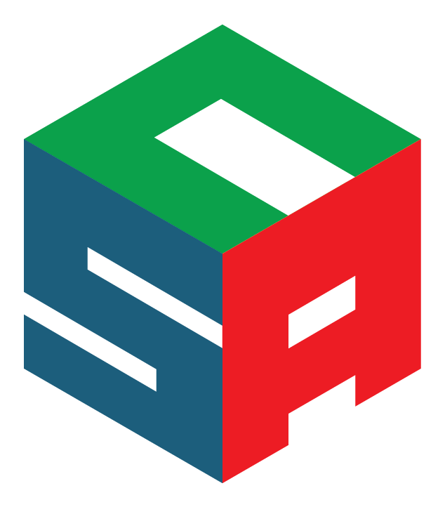
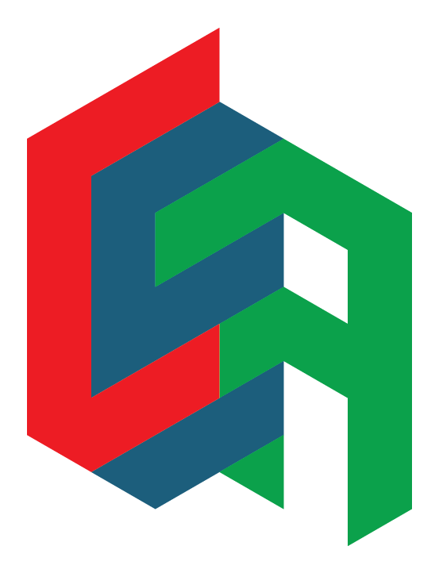
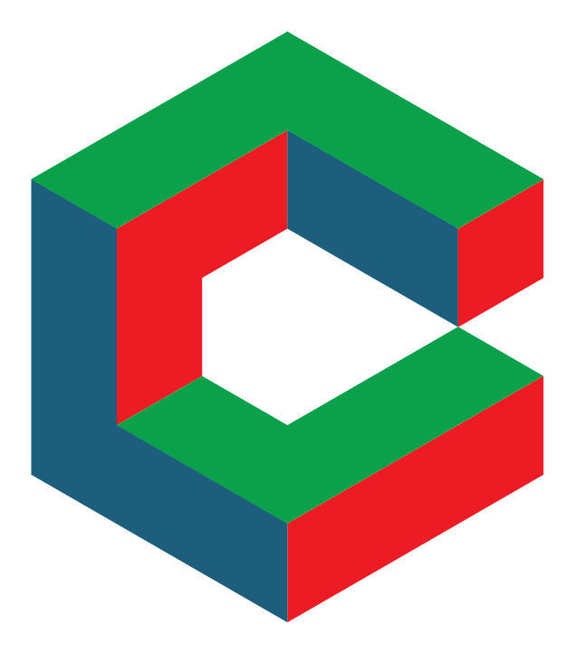
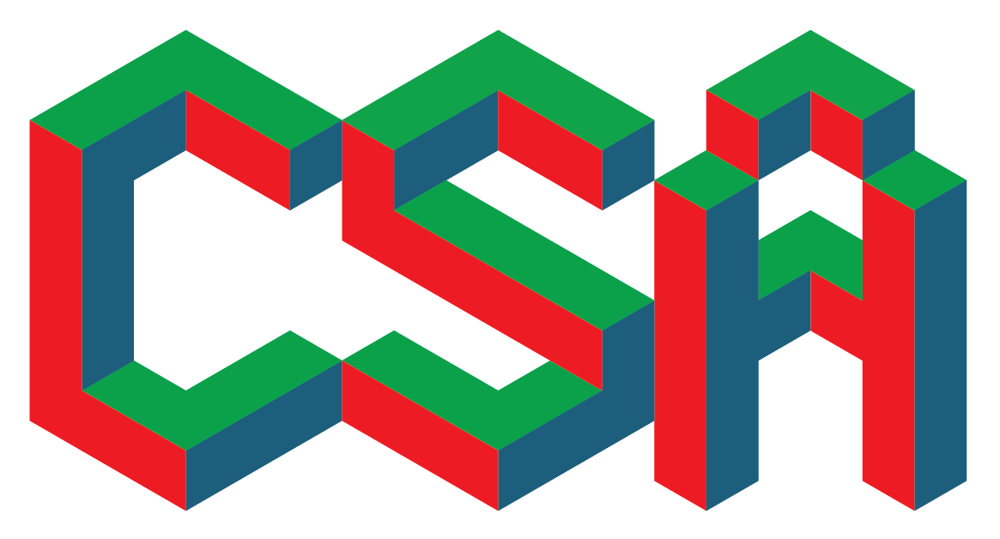
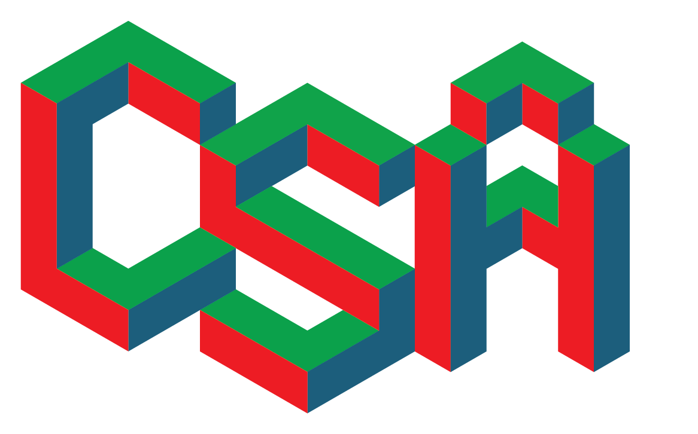
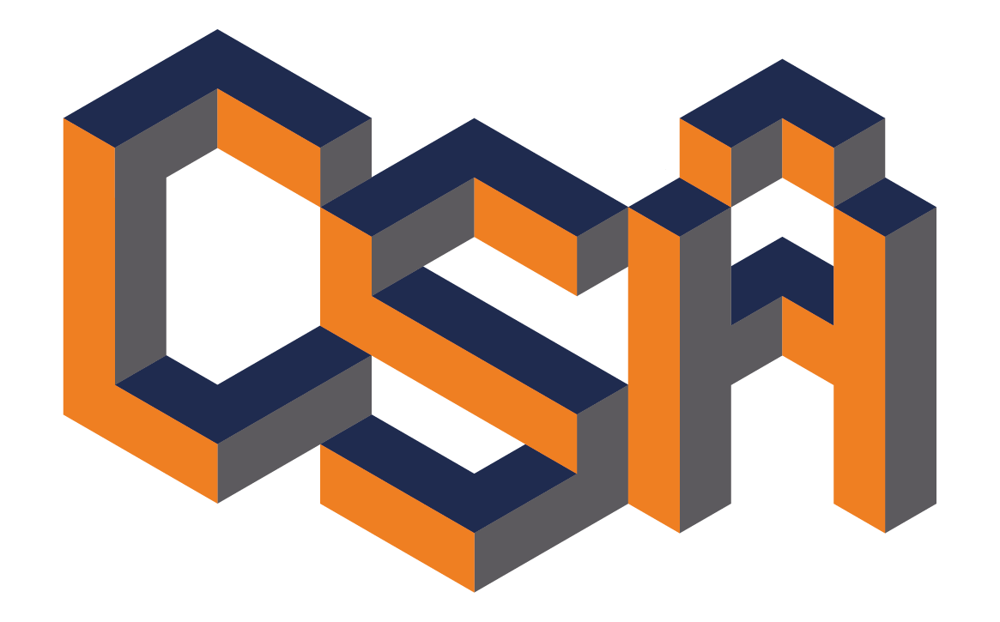
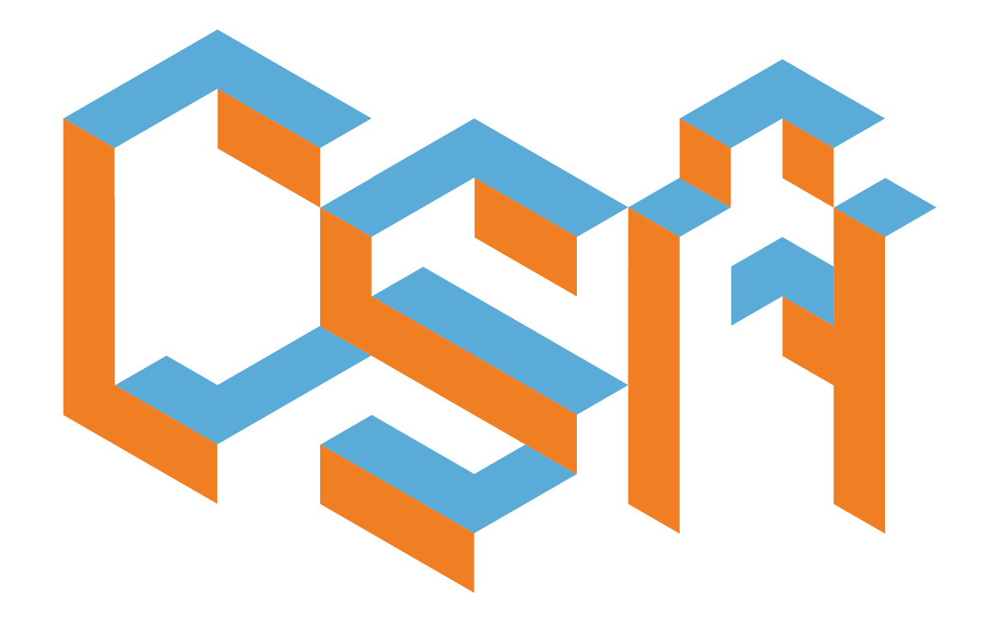
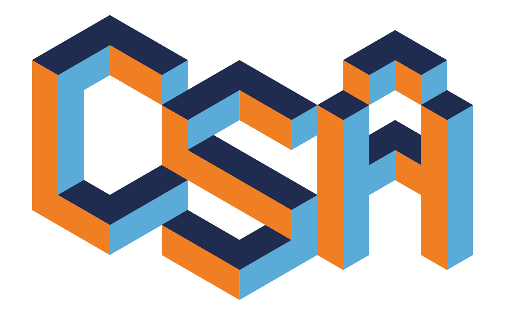
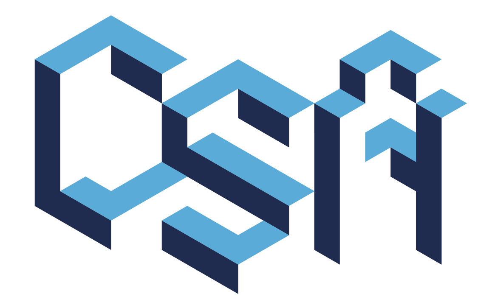
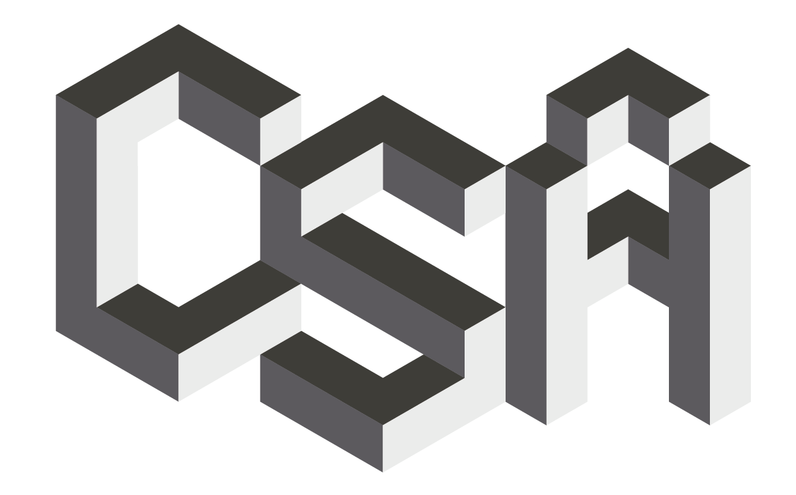
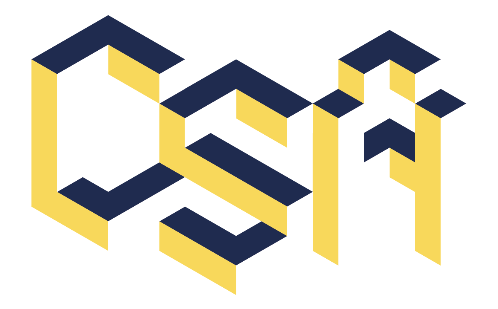
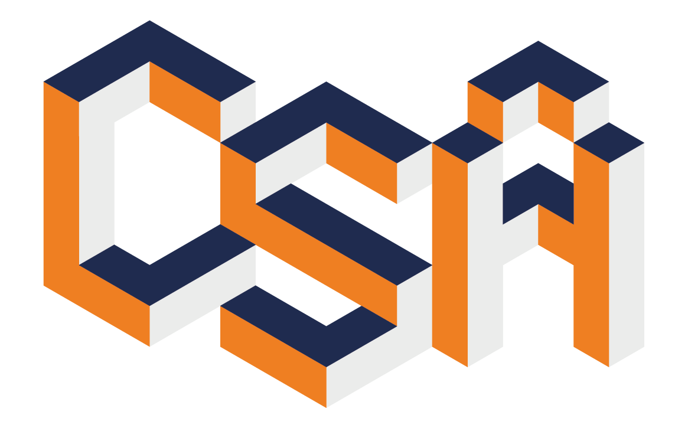
Mensen lezen schermen gebaseerd op hun ervaringen en verwachtingen, aldus Dr. Weinschenk in haar boek "100 Things Every Designer Needs To Know About People". Daarom is de indeling van de Hub gebaseerd op de resultaten van de Design Pattern Research waar vijf verschillende landing pages vergeleken zijn met elkaar. De vormgeving straalt rust en orde uit. Door de sterke visuele hiërarchie (kop, artikel samenvatting en artikel zelf) wordt de cognitieve belasting geminimaliseerd. Dit heeft een positieve impact op de gebruikerservaring. Onder de hero afbeelding en hero tekst staan drie call to action cards. Dit zijn drie verwante elementen die dicht bij elkaar staan. Ze hebben een kop, een korte uitleg en een knop die ze verwijst naar een andere pagina. Omdat de updates die op de website van Configura geplaatst worden vaak over het hoofd gezien worden is er ook een nieuws artikel sectie, onderaan de Hub. Doordat de tekst net wegvalt zal de gebruiker automatisch scrollen om de rest van de koppen te lezen. De navigatie naar alle artikelen is links geplaatst. Dit is omdat de primaire gebruikers van CSA westers zijn en van links naar rechts lezen. De zwarte driehoek is een visuele cue dat het item uitklapbaar is omdat dit een standard practice is bij navigatie menus. Boven elk artikel is er een breadcrumb navigatie, zodat de gebruiker weet waar het huidige artikel onder valt. De hero image moet een representatie zijn van de functie of handeling die uitgelegd wordt in het artikel. Voor het prototype is er in de meeste gevallen geen afbeelding gekoppeld. De hero sectie omvat een titel met daaronder een korte uitleg zodat de gebruiker in een oogopslag kan lezen wat er op de rest van de pagina staat. Daaronder staat een label of de content deel is van de CSA Basic of CSA Advanced training. De inhoudelijke structuur van de navigatie is op het moment van schrijven gebaseerd op een Co-Design sessie met de Product Owner, de L&D Manager en een van de CSA Key Users.
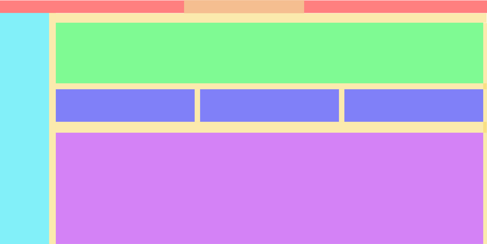